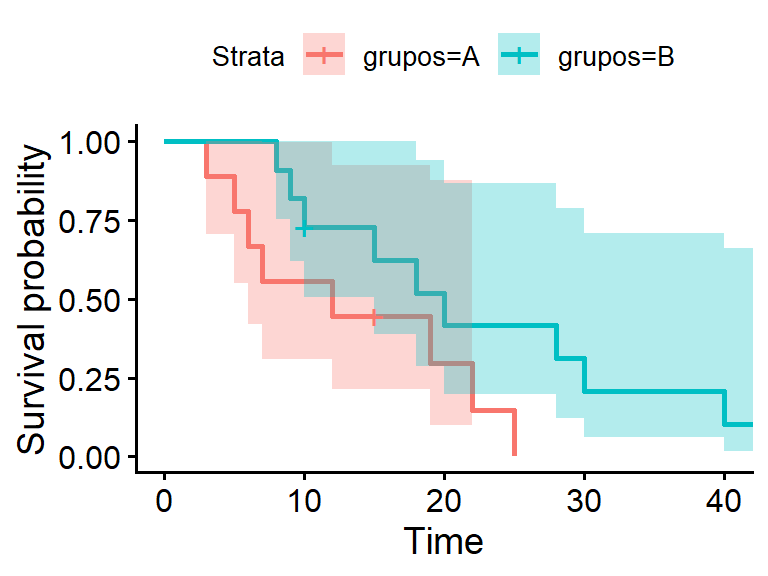

log_vero_expo_atf <- function(par, t, delta, X) {
mu <- X %*% par
ll <- sum( delta * (-mu) - (t / exp(mu)) )
return(-ll)
}
X <- model.matrix(~grupos + idade, data = df_cc_bx)
p <- ncol(X)
beta_ini <- rep(0,p)
fit <- optim(
par = beta_ini,
fn = log_vero_expo_atf,
t = df_cc_bx$tempos,
delta = df_cc_bx$cens,
X = X,
method = "BFGS",
hessian = TRUE
)
modelo_exp <- survreg(Surv(df_cc_bx$tempos, df_cc_bx$cens) ~.,df_cc_bx, dist = "exponential")9 Aplicação: Modelos de Tempo de Vida Acelerados
9.1 Modelo ATF Exponencial
\[\log L = \sum_{i=1}^{n} \left[ \delta_{i} [-(\beta_{0}+\beta'x)] - \frac{t_{i}}{\exp(\beta_{0}+\beta' x_{i})} \right]\]
res_modelo <- summary(modelo_exp)
beta_surv <- coef(modelo_exp)
# Estimativas e erros-padrão
beta_hat <- fit$par
vcov_hat <- solve(fit$hessian)
se_hat <- sqrt(diag(vcov_hat))
resultado <- data.frame(
Estimativa = beta_hat,
EP = se_hat,
z = beta_hat/se_hat,
pvalor = 2 *(1-pnorm(beta_hat/se_hat))
)
comparando_estimativas <- cbind(resultado,as.data.frame(res_modelo$table))
resultado Estimativa EP z pvalor
1 2.575965898 0.83575313 3.0822091 0.002054705
2 0.596908500 0.48590169 1.2284553 0.219276107
3 0.001937873 0.01844976 0.1050351 0.916347936comparando_estimativas Estimativa EP z pvalor Value Std. Error
(Intercept) 2.575965898 0.83575313 3.0822091 0.002054705 2.581680983 0.83686219
gruposB 0.596908500 0.48590169 1.2284553 0.219276107 0.596082081 0.48602269
idade 0.001937873 0.01844976 0.1050351 0.916347936 0.001821085 0.01847475
z p
(Intercept) 3.08495356 0.002035839
gruposB 1.22644908 0.220029725
idade 0.09857157 0.921478446# Intervalo de confiança
IC_inf_exp <- beta_hat - 1.96*se_hat
IC_sup_exp <- beta_hat + 1.96*se_hat
resultado$IC95_inf <- IC_inf_exp
resultado$IC95_sup <- IC_sup_exp
km <- survfit(Surv(tempos, cens) ~ grupos, data = df_cc_bx)
ggsurvplot(km,data = df_cc_bx,conf.int = T)
9.2 Modelo ATF Weibull
\[ \log L = \sum_{i=1}^{n} \left[ \delta_i \Big( \log(\gamma) + (\gamma - 1)\log(t_i) - \gamma(\beta_0 + \boldsymbol{\beta}'\mathbf{x}_i) \Big) - \left( \frac{t_i}{\exp(\beta_0 + \boldsymbol{\beta}'\mathbf{x}_i)} \right)^\gamma \right] \]
log_vero_weibull_atf <- function(par, t, delta, X){
gama <- par[1]
beta <- par[-1]
if (gama <= 0) return(Inf)
mu <- X %*% beta
lambda_log <- log(gama) + (gama - 1)*log(t) - gama * (mu)
surv_t <- (t/exp(mu))^gama
ll <- sum(delta * lambda_log - surv_t)
return(-ll)
}
par1<-c(1,rep(0,p))
fit_w <- optim(
par = par1,
fn = log_vero_weibull_atf,
t = df_cc_bx$tempos,
delta = df_cc_bx$cens,
X = X,
method = "BFGS",
hessian = T
)
modelo_weibull <- survreg(Surv(df_cc_bx$tempos, df_cc_bx$cens) ~.,df_cc_bx, dist = "weibull")
res_modelo_wei <- summary(modelo_weibull)# Estimativas
gamma <- fit_w$par[1]
beta_hat_wei <- fit_w$par[-1]
# Matriz de covariâncias
vcov <- solve(fit_w$hessian)
# Erros-padrão
se <- sqrt(diag(vcov))
resultado_weibull <- data.frame(
Estimativa = fit_w$par,
EP = se,
z= fit_w$par/se,
pvalor = 2*(1-pnorm(abs(fit_w$par / se)))
)
sigma_surv <- modelo_weibull$scale
gama_surv <- 1/sigma_surv
beta_surv <- coef(modelo_weibull)
# O valor da gama precisa se calculado por ser
# utilizado valor extremo no pacote.
comparacao <- data.frame(
Parametro = c("gama", names(beta_surv)),
Survival = c(gama_surv, beta_surv)
)
comparando_estimativas1 <- cbind(resultado_weibull,comparacao, as.data.frame(res_modelo_wei$table))
comparando_estimativas1 Estimativa EP z pvalor Parametro
1.7134903923 0.33185675 5.16334354 2.425773e-07 gama
(Intercept) 2.7064454016 0.48500116 5.58028650 2.401227e-08 (Intercept)
gruposB 0.5543309862 0.28446942 1.94864878 5.133738e-02 gruposB
idade 0.0003944492 0.01085689 0.03633169 9.710179e-01 idade
Survival Value Std. Error z p
1.7135334406 2.7126073391 0.4864536 5.57629235 2.456989e-08
(Intercept) 2.7126073391 0.5546308839 0.2845402 1.94921797 5.126940e-02
gruposB 0.5546308839 0.0002502573 0.0108931 0.02297394 9.816711e-01
idade 0.0002502573 -0.5385575781 0.1936453 -2.78115447 5.416596e-03# Intervalo de confiança
IC_inf <- beta_hat_wei - 1.96*se
IC_sup <- beta_hat_wei + 1.96*se
resultado_weibull$IC95_inf <- IC_inf
resultado_weibull$IC95_sup <- IC_sup
resultado_weibull Estimativa EP z pvalor IC95_inf IC95_sup
1 1.7134903923 0.33185675 5.16334354 2.425773e-07 2.0560062 3.3568846
2 2.7064454016 0.48500116 5.58028650 2.401227e-08 -0.3962713 1.5049333
3 0.5543309862 0.28446942 1.94864878 5.133738e-02 -0.5571656 0.5579545
4 0.0003944492 0.01085689 0.03633169 9.710179e-01 2.6851659 2.7277249# Modelo que melhor se ajustou
k <- length(beta_hat)
log_link_est <- fit$value
log_link_pk <- modelo_exp$loglik[2]
# Exponencial
# Modelo estimado pela aplicação
AIC_exp_esp <- -2*(-log_link_est) + 2*k
BIC_exp_esp <- -2*(-log_link_est) + log(nrow(df_cc_bx))*k
# Modelo estimado pela pacote
AIC_exp_pk <- -2*(log_link_pk) + 2*k
BIC_exp_pk <- -2*(log_link_pk) + log(nrow(df_cc_bx))*k
# Weibull
k1 <- length(beta_hat_wei)
log_link_est1 <- fit_w$value
log_link_pk1 <- modelo_weibull$loglik[2]
# Modelo estimado pela aplicação
AIC_wei_esp <- -2*(-log_link_est1) + 2*k1
BIC_wei_esp <- -2*(-log_link_est1) + log(nrow(df_cc_bx))*k1
# Modelo estimado pela pacote
AIC_wei_pk <- -2*(log_link_pk1) + 2*k1
BIC_wei_pk <- -2*(log_link_pk1) + log(nrow(df_cc_bx))*k1
modelo_ajustado <- as.data.frame(cbind(AIC_exp_esp,AIC_exp_pk,BIC_exp_esp,BIC_exp_pk,AIC_wei_esp,AIC_wei_pk,BIC_wei_esp,BIC_wei_pk))
modelo_ajustado AIC_exp_esp AIC_exp_pk BIC_exp_esp BIC_exp_pk AIC_wei_esp AIC_wei_pk
1 141.0671 141.0671 144.0543 144.0543 134.9579 134.9577
BIC_wei_esp BIC_wei_pk
1 137.9451 137.9449\[ΔAIC=141.0671−134.9579=6.1092\] \[ΔBIC=144.0543−137.9451=6.1092\]
Os modelos paramétricos Exponencial e Weibull foram ajustados por máxima verossimilhança. O modelo Weibull apresentou menores valores de AIC (134,96) e BIC (137,95) em comparação ao modelo Exponencial (AIC = 141,07; BIC = 144,05), indicando melhor ajuste aos dados. A diferença de aproximadamente 6 unidades em ambos os critérios fornece evidência favorável ao modelo Weibull, sugerindo que a taxa de risco não permanece constante ao longo do tempo.